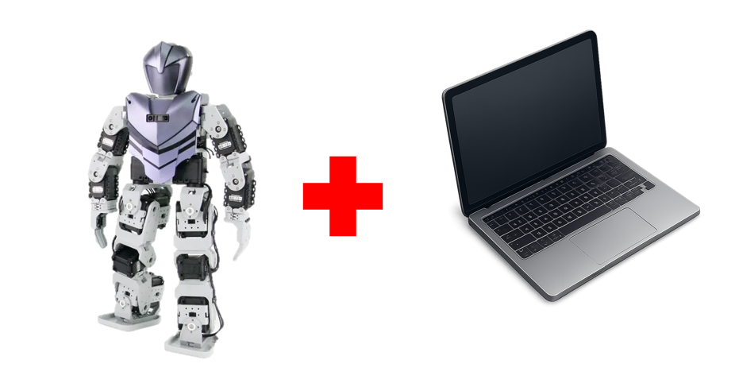
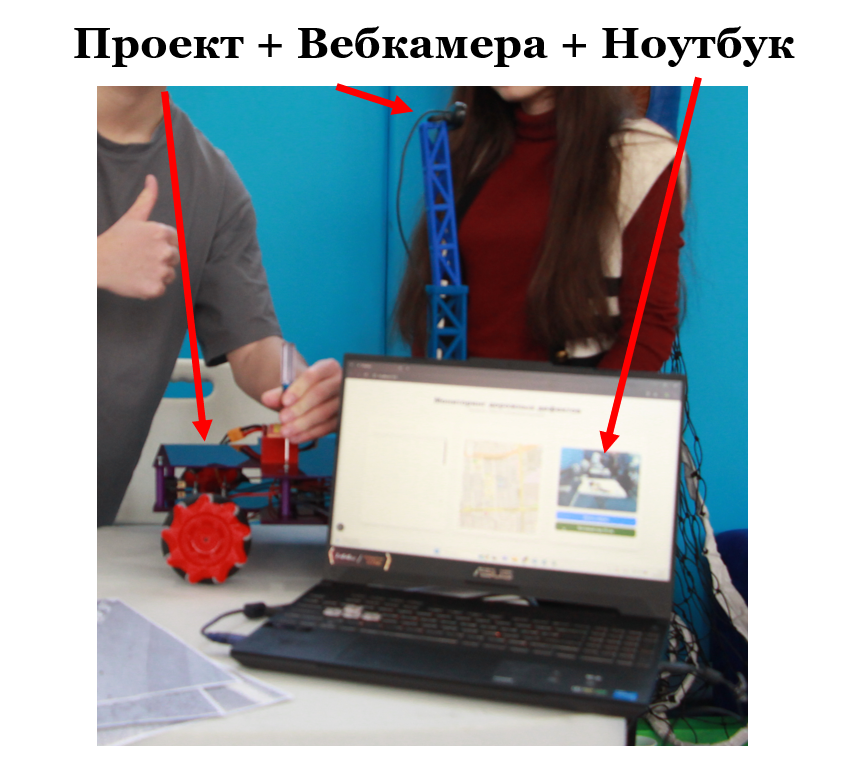
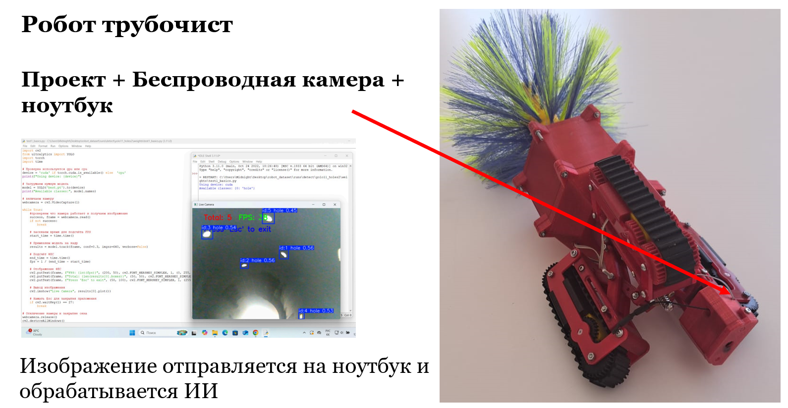
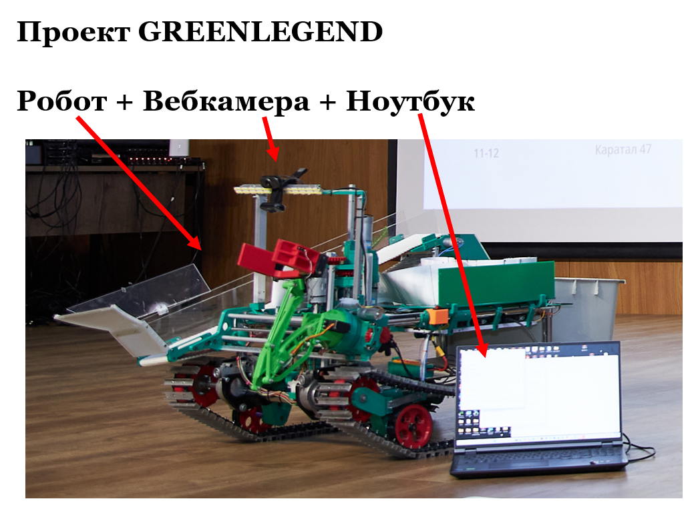
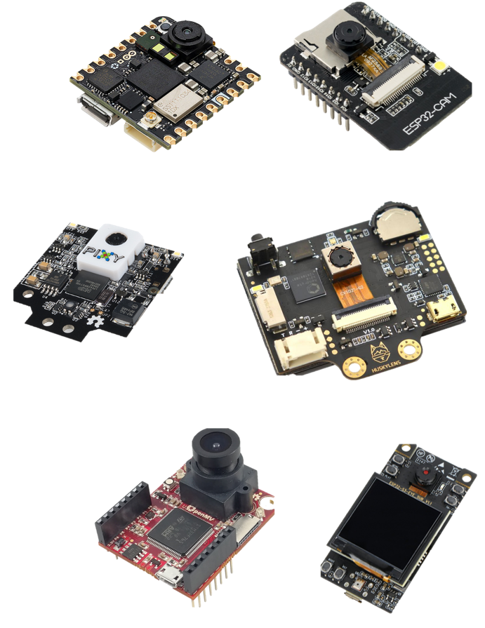
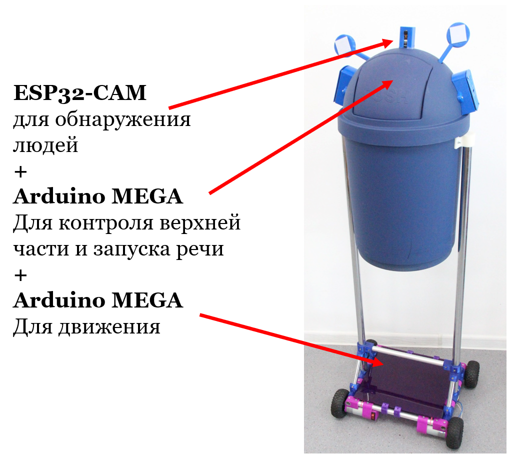
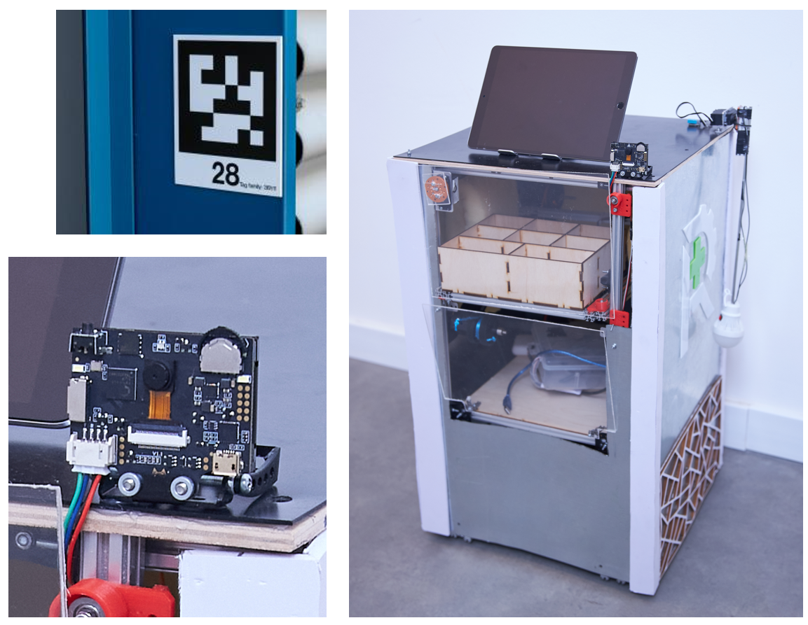
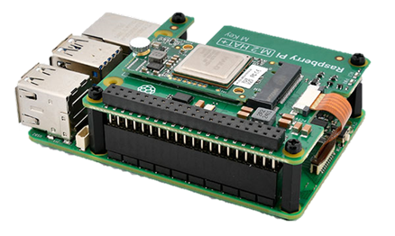
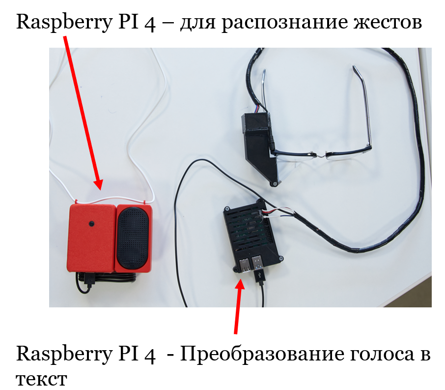
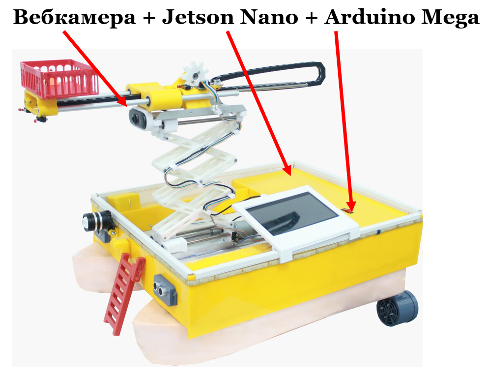

Физические способы внедрения
1. Имитация
Отдельно создается тело проекта и отдельно ИИ на ноутбуке. Для демонстрации используется встроенная камера ноутбука (или микрофон). Обычно это делается на начальных этапах разработки, на уровне городских/областных конкурсов. Во время выступления рассказывают о дальнейшей интеграции.

1.1 Имитация+
Также отдельно создается тело проекта и отдельно ИИ на ноутбуке, но вместо камеры на ноутбуке используется USB вебкамера или беспроводная камера.
Пример 1:

Пример 2:

2. Связь кода с железом
ИИ также находиться на ноутбуке, вебкамера находиться на роботе и подключена к ноутбуку. Но также Arduino (или любое другое железо робота) подключено ноутбуку. Скрипт ИИ обрабатывает данные и отправляет в Arduino.
Пример 1:
При обнаружении мусора на пути движения, программа отправляет сигнал на Arduino, которая управляет рукой и собирает мусор.

3. Слабое "железо"
Слабое "железо" - это разного рода специализированные платы имеющие встроенный ИИ функционал.
Например:
- ESP32-CAM
- Pixy
- Huskylens
- OpenMV Cam
- Arduino Nicla Vision
- ESP32-S3-EYE

Чаще всего они обрабатывают данные и отправляют их на плату Arduino на роботе.
Подробнее
Подробнее про ИИ камеры тут.
Пример 1: Робот – Умная мусорка.
ESP32-CAM — недорогая плата на ESP32 с разъёмом под камеру Wi-Fi/BLE и слотом microSD.
ESP-WHO — открытый фреймворк Espressif для компьютерного зрения на ESP32/ESP32-S3.

Пример 2: Проект Robocare с финала Samsung Solve for tomorrow 2025. Робот помощник использует Huskylens камеру для определения номеров палат по AprilTag. 
4. Микрокомпьютеры
Можно использовать как отдельно для запуска ИИ в связке с Arduino, так и полностью управлять всем железом с них.
Raspbery PI 4/5 + AI Kit также разные клоны Orange Pi
Raspberry Pi - серия недорогих одноплатных компьютеров общего назначения, созданных Raspberry Pi Foundation для обучения и проектов. Используются как полноценные ПК и встраиваемые системы.
Raspberry Pi AI Kit - комплект для Raspberry Pi 5: предустановленный модуль Hailo-8L на M.2 HAT+. Даёт до 13 TOPS для ускорения инференса нейросетей. Интегрирован в стек камер Raspberry Pi OS и автоматически задействуется в rpicam-apps.
Нативная поддержка в rpicam-apps для пост-обработки видео с камер. Подходит для детекции, сегментации, трекинга и др. в реальном времени.

Клоны и подобные платы:
| Плата | Описание |
|---|---|
| Orange Pi 5 Pro | Флагман Orange Pi для настольных и edge-проектов, активная экосистема и официальные образы. |
| Radxa ROCK 5B | Производительная плата Radxa с упором на мультимедиа и задачи CV/ИИ, богатые интерфейсы. |
| Banana Pi BPI-M6 | Современный Banana Pi с акцентом на мультимедиа и ввод/вывод видео, подходит для встраиваемых систем. |
| Khadas VIM4 | Компактная плата Khadas с установщиком OOWOW и расширениями для проектов makers/IoT. |
| ODROID-M1S | Актуальный ODROID с акцентом на надёжность и длительную поставку для индустрии. |
| Libre Computer Le Potato (AML-S905X-CC) | Доступная альтернатива Raspberry Pi с поддержкой популярных Linux-дистрибутивов и активным сообществом. |
| Orange Pi Zero 3 | Компактная плата для IoT и медиаприложений, подходит для headless-сценариев. |
| Radxa ZERO 3W | Миниатюрная плата форм-фактора Pi Zero с современными беспроводными возможностями. |
| ASUS Tinker Board 2 | Серия ASUS для IoT и встраиваемых задач, ориентирована на стабильность и поддержку. |
| BeagleBone Black | Классическая платформа с сильным сообществом и быстрым стартом разработки. |
Пример 1: Проект Soyle с финала Samsung solve for tomorrow 2025. Проекты полностью работают на Raspberry PI. В одном устройстве устная речь с микрофона преобразуется в текст на экране очков. В другом, камера распознает язык жестов и преобразует в звук.

NVIDIA Jetson
NVIDIA Jetson™ — ведущая платформа для периферийного ИИ и робототехники, предлагающая мощные компактные компьютеры и комплект SDK NVIDIA JetPack™ для ускоренной разработки. JetPack предоставляет готовые программные сервисы для ускорения разработки сложных периферийных приложений ИИ, включая робототехнику, генеративный ИИ и компьютерное зрение.
| Серия / модель | Примеры модулей и наборов | ИИ-перф. (как у NVIDIA) | Примечание |
|---|---|---|---|
| Jetson AGX Thor | AGX Thor Dev Kit | до 2070 TFLOPS FP4 (sparse) | Blackwell, 128 GB, 40–130 Вт |
| Jetson AGX Orin | AGX Orin 64 GB / 32 GB / Industrial; Dev Kit | до 275 TOPS | 15–60 Вт, топовая серия Orin |
| Jetson Orin NX | Orin NX 16 GB / 8 GB | до 157 TOPS | 10–40 Вт, форм-фактор 70×45 мм |
| Jetson Orin Nano | Orin Nano 8 GB / 4 GB; Orin Nano Super Dev Kit | до 67 TOPS (Super) | JetPack 6.2 повысил предел с 40 до 67 TOPS |
| Jetson AGX Xavier | AGX Xavier 32 GB / 64 GB / Industrial | 32 TOPS (AGX), 30 TOPS (Industrial) | Предыдущее поколение AGX |
| Jetson Xavier NX | Xavier NX 8 GB / 16 GB | 21 TOPS | Малый форм-фактор 70×45 мм |
| Jetson TX2 (семейство) | TX2, TX2 4GB, TX2i, TX2 NX | ~1.3 TFLOPS FP16 | Pascal-GPU, 7.5–15 Вт |
| Jetson TX1 | TX1 | ~1 TFLOPS FP16 | Maxwell-GPU, 4 GB LPDDR4 |
| Jetson Nano | Nano Module; Nano Dev Kit | 472 GFLOPS FP16 | Maxwell-GPU, 4 GB LPDDR4 |
Подробнее о Jetson Nano
Пример 1: Проект – лодка спасатель. При обнаружении человека Jetson Nano передает координаты человека в кадре по UART в Arduino. В зависимости от этого лодка меняет свой маршрут.
